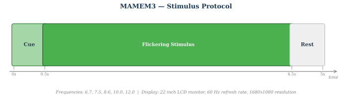

moabb.datasets.MAMEM3#
- class moabb.datasets.MAMEM3(subjects=None, sessions=None)[source]#
Bases:
BaseMAMEM[source]Dataset Snapshot
MAMEM3
Comparative evaluation of state-of-the-art algorithms for SSVEP-based BCIs. Dataset includes 256-channel EEG signals from 11 subjects performing SSVEP tasks with 5 different flickering frequencies.
SSVEP, 5 classes (6.66 vs 7.50 vs 8.57 vs 10.00 vs 12.00)
Class Labels: 6.66, 7.50, 8.57, 10.00, 12.00
Benchmark Context
WithinSessionIncluded in 1 MOABB benchmark table(s). Scores are across available pipelines (WithinSession accuracy).
- SSVEP all classes 6 pipelinesMax 42.10 · Median 31.00 · Mean 30.30 · Std 10.74
Citation & Impact
- Paper DOI10.6084/m9.figshare.2068677.v1
- CitationsLoading…
- Public APICrossref | OpenAlex
- Data DOI10.48550/arXiv.1602.00904
- MOABB tables1 (WithinSession)
- Page Views30d: 2 · all-time: 311#30 of 152 · Top 20% most viewedUpdated: 2026-04-27 UTC
Stimulus Protocol
5s task window per trial · 5-class ssvep paradigm · 10 runs/session across 1 sessions
HED Event TagsHED tagsSource: MOABB BIDS HED annotation mapping.
6.66Sensory-eventExperimental-stimulusVisual-presentationLabel7.50Sensory-eventExperimental-stimulusVisual-presentationLabel8.57Sensory-eventExperimental-stimulusVisual-presentationLabel10.00Sensory-eventExperimental-stimulusVisual-presentationLabel12.00Sensory-eventExperimental-stimulusVisual-presentationLabelHED tree view
Tree · 6.66
├─ Sensory-event ├─ Experimental-stimulus ├─ Visual-presentation └─ Label
Tree · 7.50
├─ Sensory-event ├─ Experimental-stimulus ├─ Visual-presentation └─ Label
Tree · 8.57
├─ Sensory-event ├─ Experimental-stimulus ├─ Visual-presentation └─ Label
Tree · 10.00
├─ Sensory-event ├─ Experimental-stimulus ├─ Visual-presentation └─ Label
Tree · 12.00
├─ Sensory-event ├─ Experimental-stimulus ├─ Visual-presentation └─ Label
Channel SummaryTotal channels14EEG14 (scalp electrodes)Montage10-20Sampling128 HzReferenceCARFilter5-48 Hz bandpass, 50 Hz notchNotch / line50 HzThis diagram is automatically generated from MOABB metadata. Please consult the original publication to confirm the experimental protocol details.
SSVEP MAMEM 3 dataset.
Dataset from [1]. Data acquisition details are documented in [3].
EEG signals with 14 channels captured from 11 subjects executing a SSVEP-based experimental protocol. Five different frequencies (6.66, 7.50, 8.57, 10.00 and 12.00 Hz) have been used for the visual stimulation, and the Emotiv EPOC, using 14 wireless channels has been used for capturing the signals.
Subjects were exposed to flickering lights from five magenta boxes with frequencies [6.66Hz, 7.5Hz, 8.57Hz, 10Hz and 12Hz] simultaneously. Prior to and during each flicking window, one of the boxes is marked by a yellow arrow indicating the box to be focused on by the subject. The Emotiv EPOC 14 channel wireless EEG headset was used to capture the subjects’ signals.
Each subject underwent a single adaptation period before the first of their 5 sessions (unlike experiment 1 in which each session began with its own adaptation period). In the adaptation period, the subject is exposed to ten 5-second flickering windows from the five boxes simultaneously, with the target frequencies specified in the FREQUENCIES3.txt file under ‘adaptation’. The flickering windows are separated by 5 seconds of rest, and the 100s adaptation period precedes the first session by 30 seconds.
Each session consisted of the following: For the series of frequencies specified in the FREQUENCIES3.txt file under ‘sessions’: A 5 second window with all boxes flickering and the subject focusing on the specified frequency’s marked box, followed by 5 seconds of rest. Between the 12th and 13th flickering window, there is a 30s resting period. This gives a total of 25 flickering windows for each session (not including the first adaptation period). Five minutes of rest before the next session (not including the 5th session).
The order of chosen frequencies is the same for each session, although there are small-moderate variations in the actual frequencies of each individual window.
Note: Each ‘session’ in experiment 1 includes an adaptation period, unlike experiment 2 and 3 where each subject undergoes only one adaptation period before their first ‘session’ [2].
Waveforms and Annotations File names are in the form U0NNn, where NN is the subject number and n is a - e for the session letter or x for the adaptation period. In addition, session file names end with either i or ii, corresponding to the first 12 or second 13 windows of the session respectively. Each session lasts in the order of several minutes and is sampled at 128Hz. Each session half and adaptation period has the following files: A waveform file of the EEG signals (.dat) along with its header file (.hea). An annotation file (.win) containing the locations of the beginning and end of each 5 second flickering window. The annotations are labeled as ‘(’ for start and ‘)’ for stop, along with auxiliary strings indicating the focal frequency of the flashing windows.
The FREQUENCIES3.txt file indicates the approximate marked frequencies of the flickering windows, equal for each session, adaptation, and subject. These values are equal to those contained in the .win annotations.
Trial manipulation: The trial initiation is defined by an event code (32779) and the end by another (32780). There are five different labels that indicate the box subjects were instructed to focus on (1, 2, 3, 4 and 5) and correspond to frequencies 12.00, 10.00, 8.57, 7.50 and 6.66 Hz respectively. 5 3 2 1 4 5 2 1 4 3 is the trial sequence for the adaptation and 4 2 3 5 1 2 5 4 2 3 1 5 4 3 2 4 1 2 5 3 4 1 3 1 3 is the sequence for each session.
Observed artifacts: During the stimulus presentation to subject S007 the research staff noted that the subject had a tendency to eye blink. As a result the interference, in matters of artifacts, on the recorded signal is expected to be high.
References
[1]Oikonomou, V. P., Liaros, G., Georgiadis, K., Chatzilari, E., Adam, K., Nikolopoulos, S., & Kompatsiaris, I. (2016). Comparative evaluation of state-of-the-art algorithms for SSVEP-based BCIs. arXiv preprint arXiv:1602.00904.
[2]MAMEM Steady State Visually Evoked Potential EEG Database https://archive.physionet.org/physiobank/database/mssvepdb/
[3]S. Nikolopoulos, 2016, DataAcquisitionDetails.pdf https://figshare.com/articles/dataset/MAMEM_EEG_SSVEP_Dataset_III_14_channels_11_subjects_5_frequencies_presented_simultaneously_/3413851
from moabb.datasets import MAMEM3 dataset = MAMEM3() data = dataset.get_data(subjects=[1]) print(data[1])
Dataset summary
#Subj
10
#Chan
14
#Classes
4
#Trials / class
20-30
Trials length
3 s
Freq
128 Hz
#Sessions
1
Participants
Population: healthy
Handedness: {‘right’: 10, ‘left’: 1}
BCI experience: naive
Equipment
Amplifier: EGI 300 Geodesic EEG System (GES 300)
Electrodes: scalp electrodes
Montage: 10-20
Reference: CAR
Preprocessing
Bandpass filter: 5-48 Hz
Steps: bandpass filtering (5-48 Hz), notch filtering (50 Hz), artifact removal (AMUSE, ICA), Common Average Reference (CAR)
Re-reference: CAR
Data Access
DOI: 10.6084/m9.figshare.2068677.v1
Repository: Figshare
Experimental Protocol
Paradigm: ssvep
Feedback: none
Stimulus: visual
- property all_subjects#
Full list of subjects available in this dataset (unfiltered).
- convert_to_bids(path=None, subjects=None, overwrite=False, format='EDF', verbose=None, generate_figures=False)[source]#
Convert the dataset to BIDS format.
Saves the raw EEG data in a BIDS-compliant directory structure. Unlike the caching mechanism (see
CacheConfig), the files produced here do not contain a processing-pipeline hash (desc-<hash>) in their names, making the output a clean, shareable BIDS dataset.- Parameters:
path (str |
Path| None) – Directory under which the BIDS dataset will be written. IfNonethe default MNE data directory is used (same default as the rest of MOABB).subjects (list of int | None) – Subject numbers to convert. If
None, all subjects insubject_listare converted.overwrite (bool) – If
True, existing BIDS files for a subject are removed before saving. Default isFalse.format (str) – The file format for the raw EEG data. Supported values are
"EDF"(default),"BrainVision", and"EEGLAB".verbose (str | None) – Verbosity level forwarded to MNE/MNE-BIDS.
generate_figures (bool) – If
True, generate interactive neural signature HTML figures in{bids_root}/derivatives/neural_signatures/. Requiresplotly(pip install moabb[interactive]). Default isFalse.
- Returns:
bids_root – Path to the root of the written BIDS dataset.
- Return type:
Examples
>>> from moabb.datasets import AlexMI >>> dataset = AlexMI() >>> bids_root = dataset.convert_to_bids(path="/tmp/bids", subjects=[1])
Notes
Use
CacheConfigto configure caching forget_data(). Usemoabb.datasets.bids_interface.get_bids_rootto get the BIDS root path.Added in version 1.5.
- data_path(subject, path=None, force_update=False, update_path=None, verbose=None)[source]#
Get path to local copy of a subject data.
- Parameters:
subject (int) – Number of subject to use
path (None | str) – Location of where to look for the data storing location. If None, the environment variable or config parameter
MNE_DATASETS_(dataset)_PATHis used. If it doesn’t exist, the “~/mne_data” directory is used. If the dataset is not found under the given path, the data will be automatically downloaded to the specified folder.force_update (bool) – Force update of the dataset even if a local copy exists.
update_path (bool | None Deprecated) – If True, set the MNE_DATASETS_(dataset)_PATH in mne-python config to the given path. If None, the user is prompted.
verbose (bool, str, int, or None) – If not None, override default verbose level (see
mne.verbose()).
- Returns:
path – Local path to the given data file. This path is contained inside a list of length one, for compatibility.
- Return type:
- download(subject_list=None, path=None, force_update=False, update_path=None, accept=False, verbose=None)[source]#
Download all data from the dataset.
This function is only useful to download all the dataset at once.
- Parameters:
subject_list (list of int | None) – List of subjects id to download, if None all subjects are downloaded.
path (None | str) – Location of where to look for the data storing location. If None, the environment variable or config parameter
MNE_DATASETS_(dataset)_PATHis used. If it doesn’t exist, the “~/mne_data” directory is used. If the dataset is not found under the given path, the data will be automatically downloaded to the specified folder.force_update (bool) – Force update of the dataset even if a local copy exists.
update_path (bool | None) – If True, set the MNE_DATASETS_(dataset)_PATH in mne-python config to the given path. If None, the user is prompted.
accept (bool) – Accept licence term to download the data, if any. Default: False
verbose (bool, str, int, or None) – If not None, override default verbose level (see
mne.verbose()).
- get_additional_metadata(subject: str, session: str, run: str)[source]#
Load additional metadata for a specific subject, session, and run.
This method is intended to be overridden by subclasses to provide additional metadata specific to the dataset. The metadata is typically loaded from an events.tsv file or similar data source.
- Parameters:
- Returns:
A DataFrame containing the additional metadata if available, otherwise None.
- Return type:
None |
pandas.DataFrame
- get_block_repetition(paradigm, subjects, block_list, repetition_list)[source]#
Select data for all provided subjects, blocks and repetitions.
subject -> session -> run -> block -> repetition
See also
- get_data(subjects=None, cache_config=None, process_pipeline=None)[source]#
Return the data corresponding to a list of subjects.
The returned data is a dictionary with the following structure:
data = {"subject_id": {"session_id": {"run_id": run}}}
subjects are on top, then we have sessions, then runs. A sessions is a recording done in a single day, without removing the EEG cap. A session is constitued of at least one run. A run is a single contiguous recording. Some dataset break session in multiple runs.
Processing steps can optionally be applied to the data using the
*_pipelinearguments. These pipelines are applied in the following order:raw_pipeline->epochs_pipeline->array_pipeline. If a*_pipelineargument isNone, the step will be skipped. Therefore, thearray_pipelinemay either receive amne.io.Rawor amne.Epochsobject as input depending on whetherepochs_pipelineisNoneor not.- Parameters:
subjects (List of int) – List of subject number
cache_config (dict |
CacheConfig) – Configuration for caching of datasets. SeeCacheConfigfor details.process_pipeline (
sklearn.pipeline.Pipeline| None) – Optional processing pipeline to apply to the data. To generate an adequate pipeline, we recommend usingmoabb.make_process_pipelines(). This pipeline will receivemne.io.BaseRawobjects. The steps names of this pipeline should be elements ofStepType. According to their name, the steps should either return amne.io.BaseRaw, amne.Epochs, or anumpy.ndarray. This pipeline must be “fixed” because it will not be trained, i.e. no call tofitwill be made.
- Returns:
data – dict containing the raw data
- Return type:
Dict
- property metadata[source]#
Return structured metadata for this dataset.
Returns the DatasetMetadata object from the centralized catalog, or None if metadata is not available for this dataset.
- Returns:
The metadata object containing acquisition parameters, participant demographics, experiment details, and documentation. Returns None if no metadata is registered for this dataset.
- Return type:
DatasetMetadata| None
Examples
>>> from moabb.datasets import BNCI2014_001 >>> dataset = BNCI2014_001() >>> dataset.metadata.participants.n_subjects 9 >>> dataset.metadata.acquisition.sampling_rate 250.0
{kind=link}